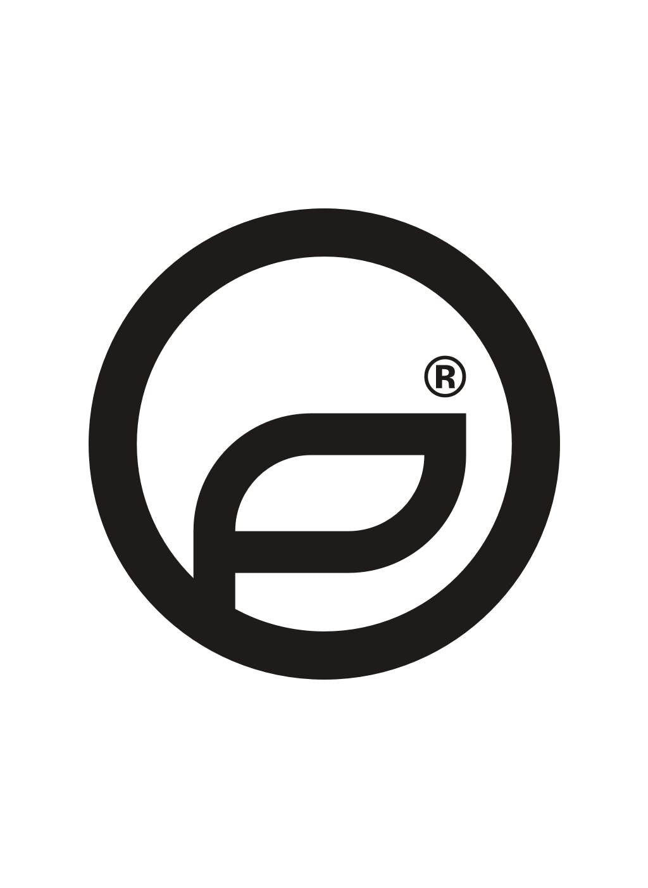
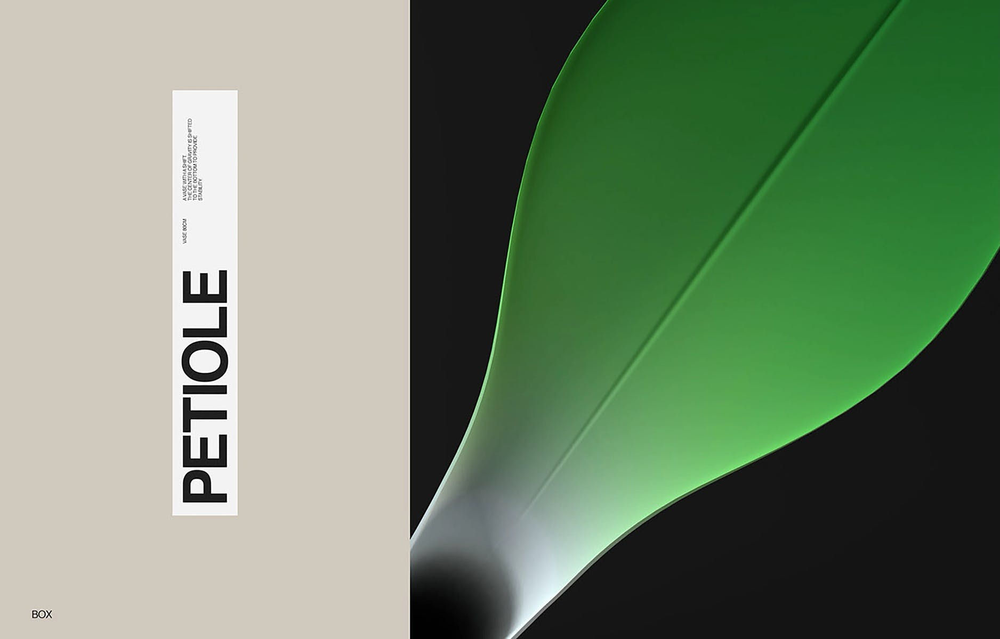
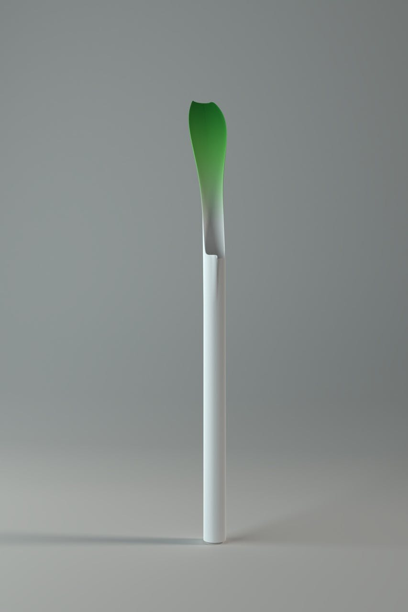
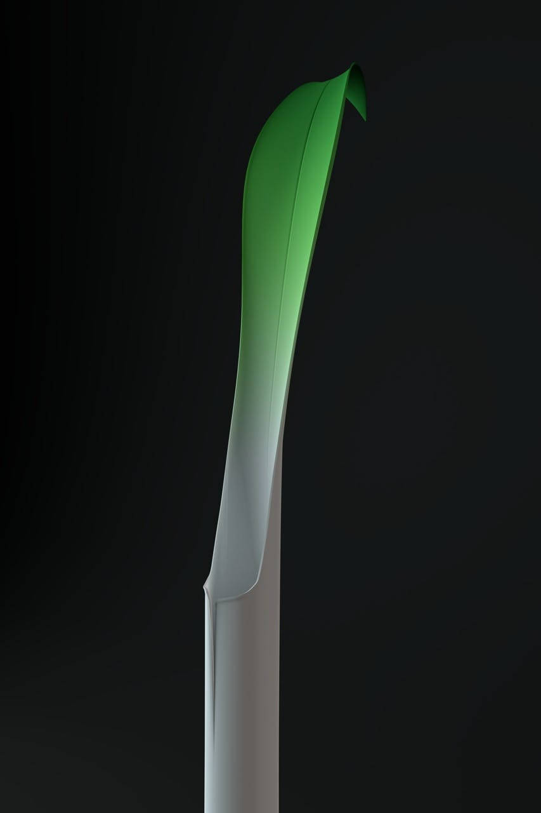

PROJECT 2 - 5
- P
- E
- T
- I
- O
- L
- E

CREDITS
Alexander Laguta BRANDING & UX/UI
Kate Laguta ANIMATIONS
Anton Kozhevnikov VASE CONCEPT
salt & Pepper DEVELOPMENT
002
OVERVIEW
The Petiole vase is constructed and designed
to give your interior a touch of nature. A "vase
with a shift" The Petiole Vase concept is an
award-winning concept brought to life by
Anton Kozhevnikov.
Taking cues from the design of the vase
itself the UI/UX and branding were thoroughly
extension of the physical piece. Perfectly
balanced and organic


